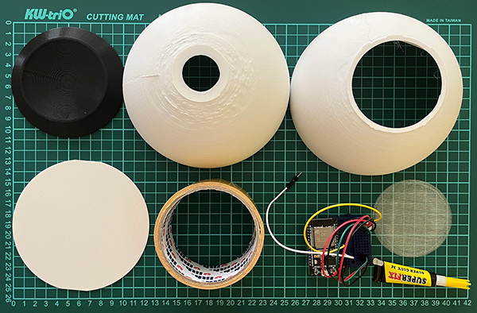
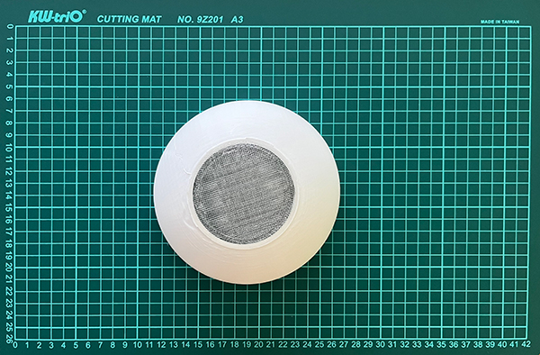
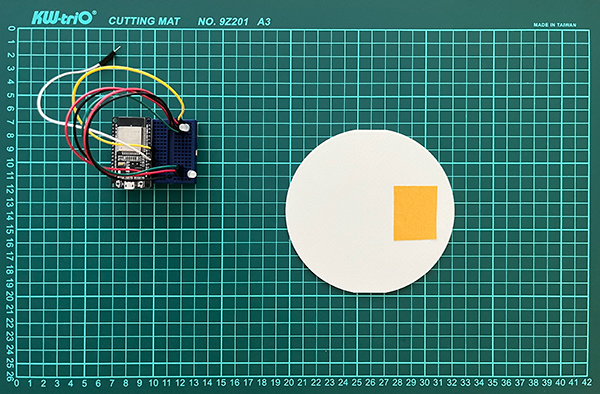
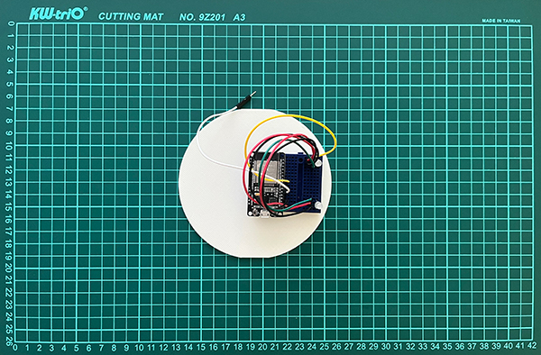
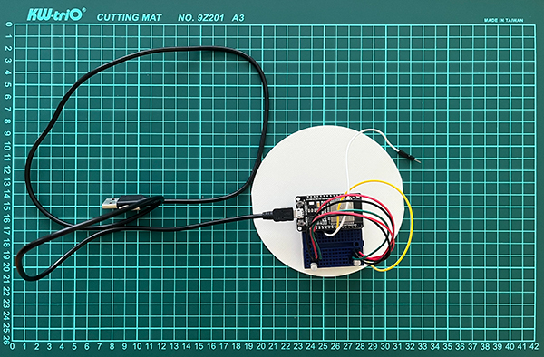

Vytvoř si svého Puffa
Nástroje
○ Vteřinové lepidlo
○ Oboustranná lepící páska
Součástky k výrobě
○ Yo-Yo machine - Light touch
○ 3D Model - Top half
○ 3D Model - Bottom half
○ 3D Model - Eye
○ 3D Model - Disk
○ 3D Model - Stand
○ USB Kabel
○ Suchý zip
○ Dekorace
○ Alobal
Krok 1 - Tvroba Puffu
Připrav si všechny nástroje a součástky.
{kind=link}
Krok 2 - Spoj Top half with Eye
Apliku vteřinové lepidlo na hrany součásti Eye a přilep k součásti Top half.
{kind=link}
Krok 3 - Přilep Light Touch k Desk
Přilep oboustrannou lepící pásku na spodek součásti Light Touch a tu přilep k součásti Desk.
 {kind=link}
{kind=link}
Krok 4 - Připoj USB Kabel
Vezmi USB Kabel a připoj jej k součásti Light Touch.
{kind=link}
Krok 5 - Vlož Desk
Vezmi připravenou součást Desk s Light Touch a USB Kabelem a vlož jej mezi držadla v součásti Bottom half.
USB Kabel a malý drátek prostrč dírou v součásti Bottom half.
{kind=link}
Krok 6 - Dokonči Puffa
Vezmi součást Bottom half a spoj se součásti Top half.
Poté polož sféru na součást Stand.
{kind=link}
Krok 7 - Ozdob Puffa
Přilep suchý zip na vrchní část sféry.
Jednu část suchého zipu na součást Top half a druhou na součást Bottom half.
{kind=link}
{kind=link}
Poté můžeš spojit zipi s dekoracemi. Můžeš využít bavlnu, kožešinu, látky...
Je to na tobě jaké materiály zvolíš pro svůj jedinečný design.
{kind=link}
Vytvoř "ocas" z alobalu, vlož jej do díry a zapíchni do něj drátek.
Otestuj jestli funguje přepínání světla na "ocasu".
{kind=link}
Krok 8 - Připraveno k použití
Puff je připraven k použití.
Užíj si svého Puffa!
Můžeš využít tyto pravidla pro posílání barevných signálů:
○ Červená - Jsem naštvaný
○ Žlutá - Cítím se trapně
○ Zelená - Jsem šťastný
○ Modrá - Jsem smutný
○ Růžová - Cítím se hravě
Nebo si můžeš vytvořit vlastní pravidla a význam pro osobní prožitek,